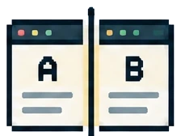

What the output must help someone do.
AI Training and Evaluation
I review AI output against the task, approved evidence, and intended audience. I define the scoring question, explain material issues, and calibrate decisions so the review is useful to the next person.
Writing + Content ReviewDesign + Aesthetics ReviewRubric DesignCalibrationQA Feedback
Why AI Evaluation Is Different
How I review an output
I start with the assignment, approved evidence, audience, and criterion I am scoring.
That makes the standard useful: the same response can be clear but unsupported, accurate but incomplete, or well designed but hard to navigate. Each is a different problem with a different rubric.
What can support the response.
The one quality question in scope.
Human Evaluation + Training
How I evaluate an AI response.
I evaluate the response against the task, the evidence, and the rubric. I document what failed, why it matters, and what a better response needs to do. Calibration turns those individual judgments into a consistent review standard.
Follow one response through the review
Read the request before judging the answer.
I establish the task, audience, source boundaries, and rating criteria first. That keeps a fluent response from receiving credit for work it did not do.
USER REQUEST
Write a two-step onboarding message. Include training, manager approval, and where to get help. Use only the source.
01Instruction following02Factual support03Clarity
Review artifact: task requirements + the applicable rubric.
Content-Type Rubric Explorer
Choose the review lens.
Choose a content type to see the specific question and signals that matter for that work. A writing check is not an evidence check, and neither replaces an experience review.
Writing Quality
Is the writing clear, natural, and easy to follow?
USE FORSEPARATE CHECK
Interactive exercises
Try the review decisions.
Use a sample case to check evidence, score one criterion, or follow the full review workflow.

Text + Source Review
Evidence-Led Review Lab
Review fictional model outputs against a task and approved source, identify the signal, choose severity, then compare your reasoning with a benchmark.
Open Text Review Lab →Rubric + Calibration
AI Rubric Demo
Score a criterion using clear anchors, then compare the score and rationale with a benchmark built for the same evaluation job.
Open AI Rubric Demo →Evaluation Operations
Human QA Workflow
See the four operating stages of one assignment: frame the review, verify evidence, diagnose issues, and record a calibrated judgment with feedback.
Open QA Workflow →Other Work
AI quality connects to the rest of the learning system.
Evaluation work sits beside the learning, platform, and systems work that makes a complete enablement experience possible.
Learning Design
Instructional Design
eLearning, scenario practice, microlearning, performance support, live training, multimedia, and complete pathways.
Explore the complete ID portfolio →Learning Platforms
LMS Administration & System Operations
Absorb and Docebo work across content, learning paths, certifications, access, migration, learner support, and reporting.
Explore the complete LMS portfolio →Systems + Automation
Workflows
Python, Selenium, data analysis, browser automation, and reporting workflows that support learning and enablement operations.
Explore the complete systems portfolio →